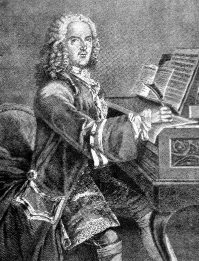

El piano tiene sus orígenes en el siglo XVIII, cuando el italiano Bartolomeo Cristofori, un fabricante de instrumentos musicales, creó el primer "gravicembalo col piano e forte" alrededor del año 1700. A diferencia del clavecín, que solo podía producir un volumen uniforme, este nuevo instrumento permitía variar la intensidad del sonido según la fuerza con la que se presionaban las teclas. Este avance revolucionó la música, dando lugar al piano, cuyo nombre proviene precisamente de su capacidad de tocar suave (piano) y fuerte (forte).
(Image by: Alchetron.com)
Durante los siglos XVIII y XIX, el piano experimentó numerosas mejoras técnicas. Se fortaleció su estructura con un marco de hierro, lo que permitió soportar una mayor tensión en las cuerdas y producir un sonido más potente y sostenido. Grandes compositores como Mozart, Beethoven, y Chopin exploraron al máximo sus posibilidades expresivas, convirtiéndolo en el instrumento central de la música clásica y romántica. Paralelamente, la fabricación en masa permitió que el piano llegara a los hogares de la burguesía, consolidando su popularidad en la sociedad.
(Image by: Rakuten.com)
En el siglo XX, el piano siguió evolucionando con la aparición de modelos eléctricos y digitales, ampliando aún más su versatilidad. Su presencia en géneros como el jazz, el blues y el rock consolidó su importancia en la música contemporánea. Hoy en día, el piano sigue siendo un instrumento clave en la educación musical y la composición, tanto en su forma acústica como digital. Con avances tecnológicos y accesibilidad en línea, tocar el piano nunca ha sido tan fácil y emocionante como ahora.
(Image by: @pommiina)
{kind=link}
{kind=link}